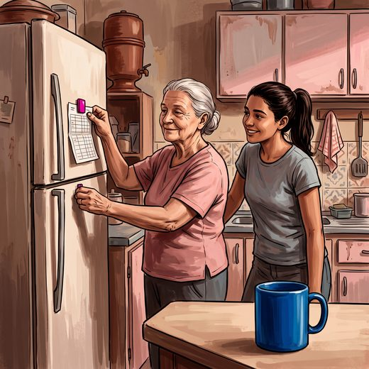

Consulta rápida à beira do leito
Condutas, doses e interações.
Referências da aula · 7
- Tamanini JTN, et al. Behavioral treatment of urinary incontinence: a guideline-driven narrative review. Gynecol Pelvic Med. 2026;9:33. doi:10.21037/gpm-2026-1-0004. PMID 42861018.PubMedDOI
- Qaseem A, Dallas P, Forciea MA, Starkey M, Denberg TD, Shekelle P. Nonsurgical management of urinary incontinence in women: a clinical practice guideline from the American College of Physicians. Ann Intern Med. 2014;161(6):429-40. PMID 25222388. doi:10.7326/M13-2410.PubMedDOI
- Dumoulin C, Cacciari LP, Hay-Smith EJC. Pelvic floor muscle training versus no treatment, or inactive control treatments, for urinary incontinence in women. Cochrane Database Syst Rev. 2018;(10):CD005654. PMID 30288727. doi:10.1002/14651858.CD005654.pub4.PubMedDOI
- Nambiar AK, Arlandis S, Bø K, et al. European Association of Urology Guidelines on the Diagnosis and Management of Female Non-neurogenic Lower Urinary Tract Symptoms. Part 1: Diagnostics, Overactive Bladder, Stress Urinary Incontinence, and Mixed Urinary Incontinence. Eur Urol. 2022;82(1):49-59. PMID 35216856. doi:10.1016/j.eururo.2022.01.045.PubMedDOI
- Gibson W, Johnson T, Kirschner-Hermanns R, et al. Incontinence in frail elderly persons: Report of the 6th International Consultation on Incontinence. Neurourol Urodyn. 2021;40(1):38-54. PMID 33085806. doi:10.1002/nau.24549.PubMedDOI
- 2023 American Geriatrics Society Beers Criteria® Update Expert Panel. American Geriatrics Society 2023 updated AGS Beers Criteria® for potentially inappropriate medication use in older adults. J Am Geriatr Soc. 2023;71(7):2052-81. PMID 37139824. doi:10.1111/jgs.18372.PubMedDOI
- Freitas EV, Py L, organizadores. Tratado de Geriatria e Gerontologia. 5ª ed. Rio de Janeiro: Guanabara Koogan; 2022.
Documentos oficiais
Leis e publicações do Ministério da Saúde sobre o cuidado da pessoa idosa, de acesso livre.
Abrir os documentos